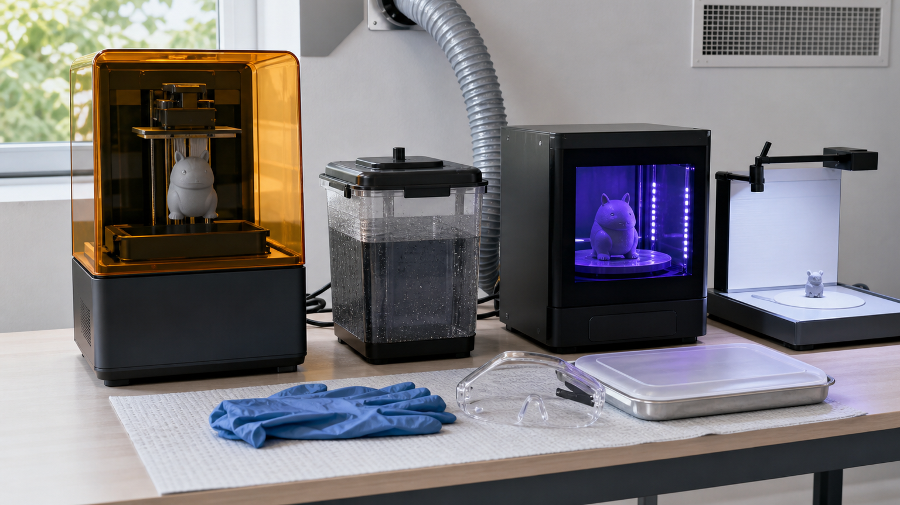
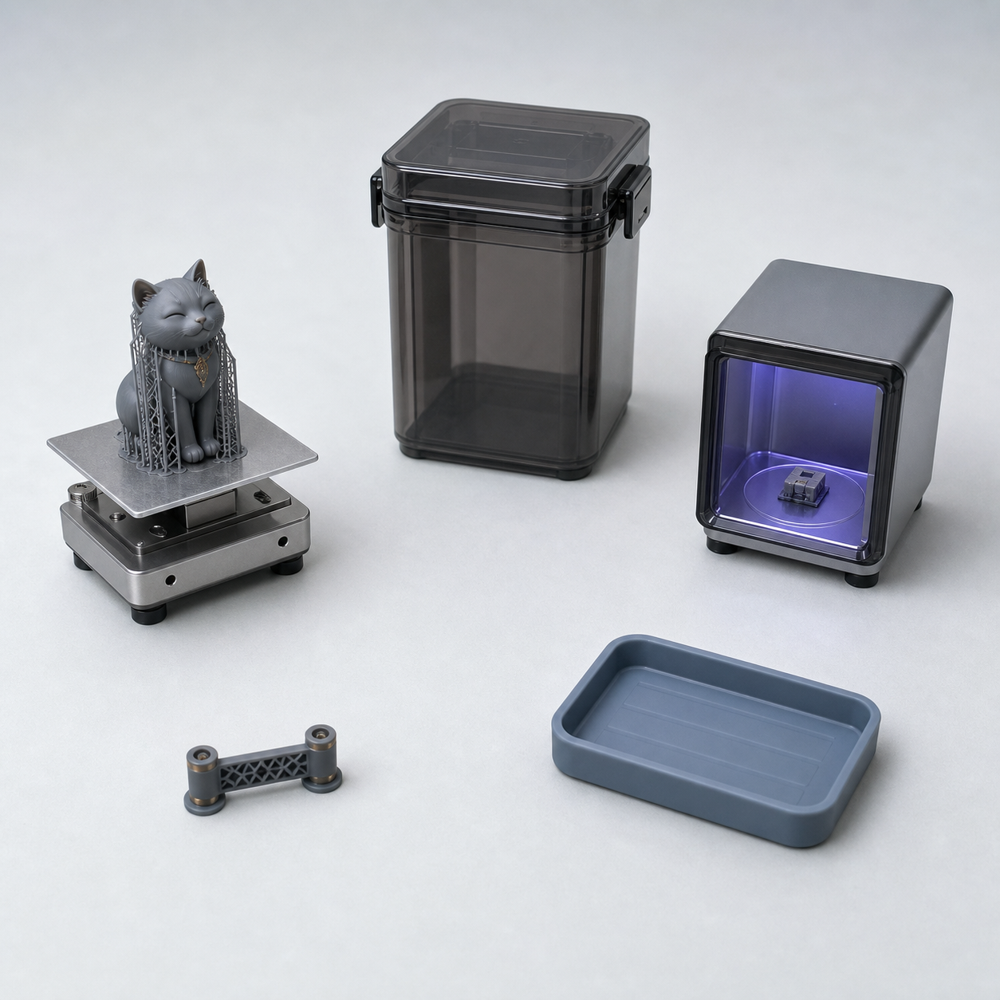
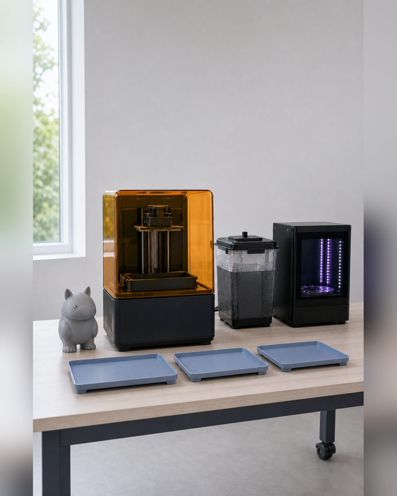

为什么必须小班：打印机和一对一支持的真实产能
把一个三维文件送进打印机，并不等于当天就能得到可进入后处理的实体。打印前要完成可打印检查、切片与排队，打印后还要取件、清洗、固化、拆支撑和检查；其中任何一次失败或局部重打，都会占用设备、工位和人工判断时间。若只按机器台数估算产能，就会低估完整任务的周转时间。 一对一支持也不是随时替每个项目完成全部操作。不同项目会在输入、修模、支撑、取件或装配处遇到不同问题，需要先分级，再把有限支持时间用在会阻断下一阶段的节点。小班的意义，是让打印队列、后处理工位和个别指导保持可调度，而不是把“人数少”本身当作质量证明。

具体问题
把一个三维文件送进打印机，并不等于当天就能得到可进入后处理的实体。打印前要完成可打印检查、切片与排队，打印后还要取件、清洗、固化、拆支撑和检查；其中任何一次失败或局部重打，都会占用设备、工位和人工判断时间。若只按机器台数估算产能，就会低估完整任务的周转时间。
一对一支持也不是随时替每个项目完成全部操作。不同项目会在输入、修模、支撑、取件或装配处遇到不同问题，需要先分级，再把有限支持时间用在会阻断下一阶段的节点。小班的意义，是让打印队列、后处理工位和个别指导保持可调度，而不是把“人数少”本身当作质量证明。
核心判断
真实产能应按“可完成的打印任务”核算，而不是只数打印机。至少要记录模型外接尺寸、材料与工艺、单次打印时长、占用平台、清洗固化与后处理时间、失败重试余量，以及是否会阻塞其他项目。没有设备清单和实测时长时，只能给出排程方法，不能虚构每天可打印多少件。
一对一支持应优先处理 Gate 2 和 Gate 3 的阻断问题：模型是否具备可制造条件，灰模或局部样是否暴露必须退回的结构问题。可以批量讲解的基础操作集中示范，需要项目判断的部分进入预约时段；每次支持都留下问题、决定、责任版本和下一步，才能检查支持是否真正推动了项目。
步骤或标准
下面六项可用于课前核算与现场调度。每项都应产生可检查记录；缺少实测数据时标记“待测”，不得用估计值冒充已验证产能。
- 建立设备与工位清单：逐台记录打印方式、可用成型范围、当前状态，以及清洗、固化、打磨和安全防护工位；现场核对设备可用性。
- 建立单任务时间卡：用代表性测试件记录切片、打印、冷却或静置、取件、清洗、固化、拆支撑和检查所需时间，并把失败重试作为独立余量。
- 给项目分级排队：按是否已通过 Gate 2、预计占用、失败风险和下一阶段依赖排序；未通过可打印检查的模型不得占用正式打印队列。
- 设置局部验证出口：复杂项目先打印连接、支撑、装配或细节局部样；局部证据足以回答问题时，不默认整件重打。
- 划分支持方式：统一操作集中示范，项目特有问题进入一对一时段；每次记录问题、当前版本、通过 / 待修 / 降级决定和复检条件。
- 每日复盘队列：核对已完成、失败、待修和下一批任务，更新剩余设备时间与人工工位；若容量不足，缩小尺寸、拆成局部样或调整完成出口。
常见错误
产能与支持最容易在“看起来还有空位”时被高估，以下错误会直接挤压修正和验证时间。
- 只按打印机数量承诺产出，不计算切片、清洗、固化、取件和失败重试；后果是机器结束后仍积压大量未验收任务，Day 3 的实体验证被推迟。
- 所有模型按报名或提交顺序直接打印，不先做 Gate 2 检查；后果是破面、薄片、重心和支撑问题占用设备，挤掉已经具备验证条件的任务。
- 把一对一支持理解为代做或无限时答疑；后果是少数复杂项目持续占用教师时间，其他项目得不到关键节点判断，也无法形成可复核的责任版本。
- 失败后默认整件重打，不先定位局部问题；后果是重复消耗材料和排程，连接、装配或细节问题仍可能在下一次出现。
- 为了维持原定成品目标而拒绝缩小或降级；后果是打印与后处理队列被单个高风险项目锁住，最终连局部验证样和问题记录都可能无法完成。
与五天课程的关系
这一主题主要连接 Day 2 / Gate 2 与 Day 3 / Gate 3。Day 2 完成人工修模、GLB / STL 输出和可打印检查，只有受控模型通过封闭、厚度、连接、重心、拆件与支撑检查后，才进入打印队列；高优先级任务可在 Day 2 晚上开始首轮打印。
Day 3 依据实际队列完成切片、打印、取件与灰模处理，并用 Gate 3 判断继续涂装、保留灰模、局部重打或退回修模。完成这一阶段后，下一阶段是 Day 4 的基础或重点局部涂装、包装方向、产品说明与素材归档；不能因排程紧张而跳过实体证据。
事实 / 案例 / 完成度边界
本文依据课程公开的 Day 2、Day 3、Gate 2、Gate 3 与每班限 10 人设置整理。当天四张图片需求只用于示意打印队列、设备周转、局部验证和支持记录，不是学员案例、真实课堂或已完成制作。真实案例必须有可核验的来源、授权、设备记录、模型版本和完成状态；示意图不能替代真实案例。
当前没有在公开内容中给出未经实测的每日打印件数或一对一支持时长。五天内的完成度受模型起点、尺寸、结构复杂度、设备状态、材料、打印时长、失败次数和后处理工作量影响，可能形成灰模、局部样或小尺寸实体样。课程不承诺人人一次打印成功、商业级精修、正式包装印刷、批量生产、正式展览、授权成交或销售，也不承诺所有项目得到相同数量、尺寸或精度的实体。
报名入口
如果你已有 IP / 角色资产，可以在报名资料中说明现有原画、角色设定或三维文件、预计实体尺寸、材料偏好和最担心的结构问题；课程会先经过 Gate 1 与 Gate 2 判断，再安排打印任务。
如果你只有想法、草图或初步设定，也可以如实填写故事、参考方向、希望做成的物品和现有设备，不需要先自行准备成熟模型。两类起点进入同一条五天生产链，并按真实产能与 Gate 证据确定范围。公开报名地址：https://wj.qq.com/s2/27296919/9499/


课程时间：2026 年 10 月 2 日至 10 月 6 日｜青岛｜每班限 10 人
填写报名资料 →